Same content on every page so the comparison is fair. Headlines are set in the studio's own Druk Web Bold and labels in Supply, both taken from the current site. Only A keeps today's lime and charcoal; B to E are colour departures to go with the rename.
Grey blocks are video or image placeholders. Square-bracket text is a fact to fill in. The editable canvas holds the same boards.
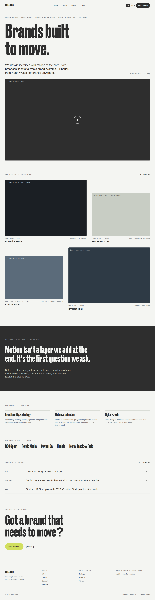
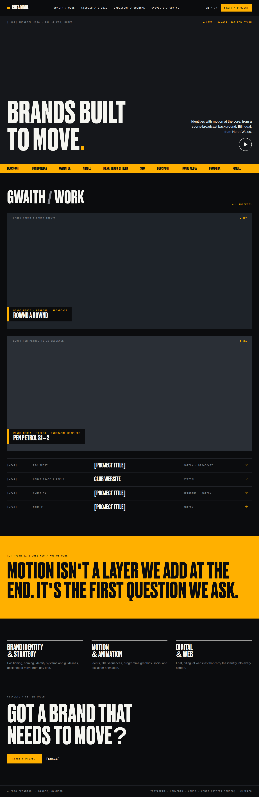
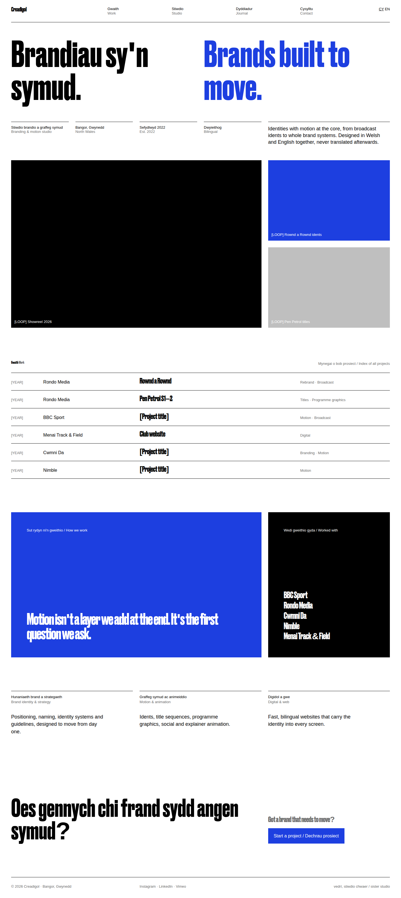
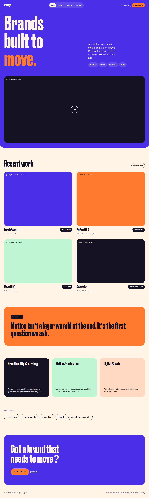
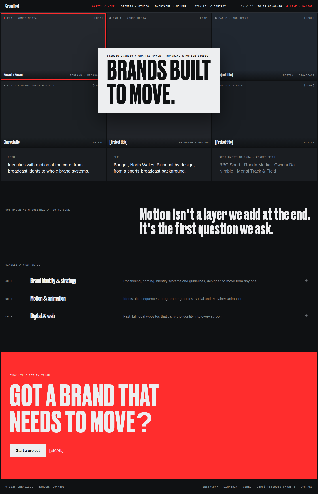
Whichever direction is chosen gets this same set of pages.
Home · mobile
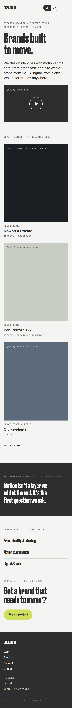
Work index
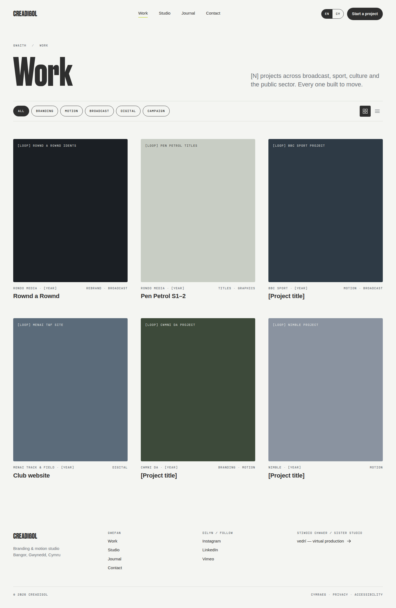
Case study · Rownd a Rownd
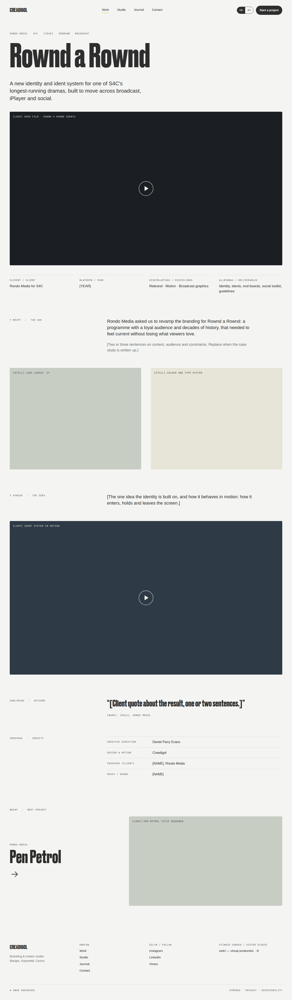
Studio
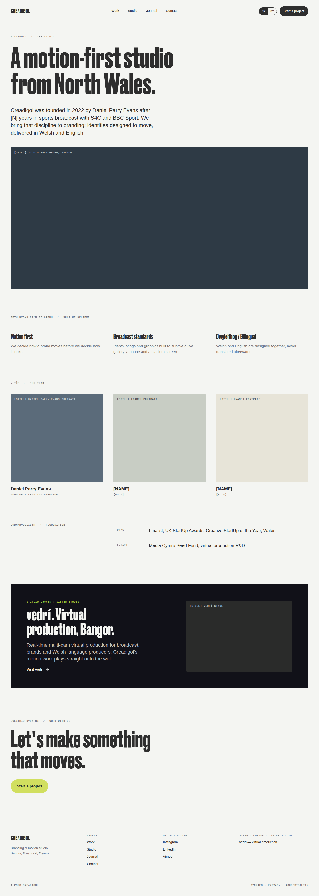
Contact
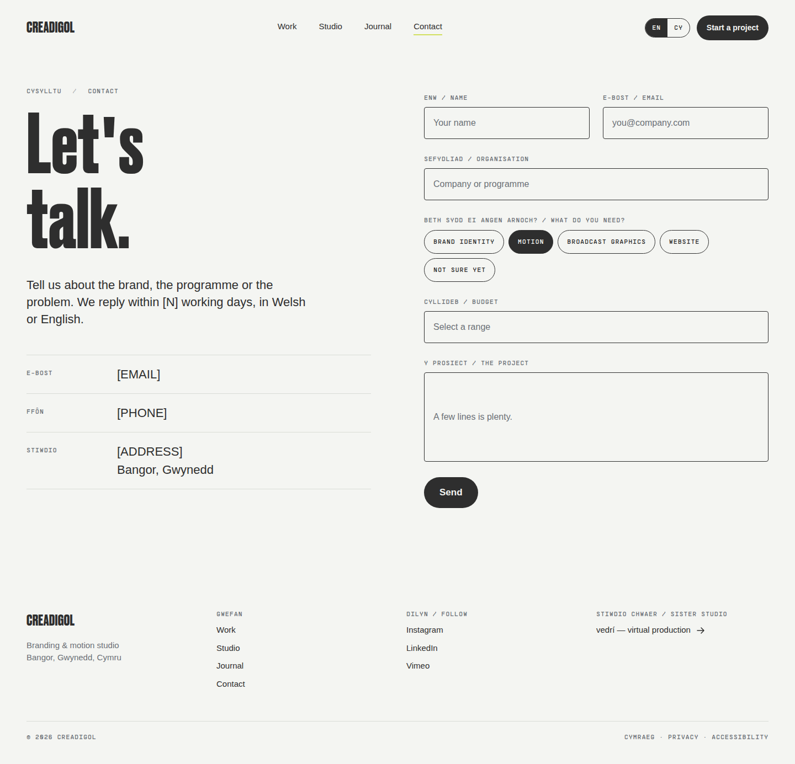
Adding a case study · editor
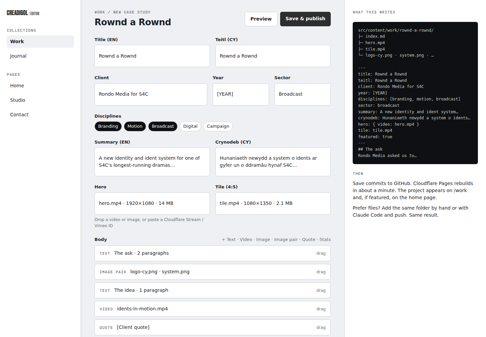